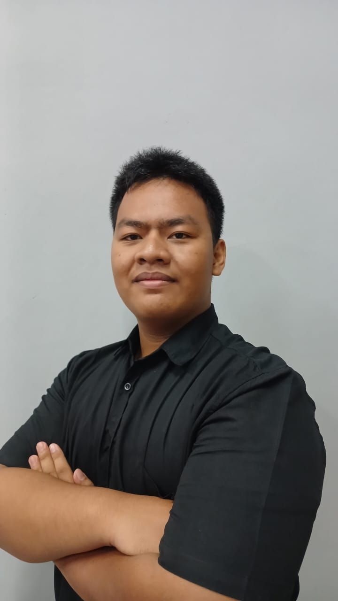

Assep Wahid
IT Student focusing on

About Me
My Journey
Saya adalah mahasiswa Teknologi Informasi yang aktif mempelajari rekayasa perangkat lunak, pemrograman berorientasi objek (PBO/OOP), pengembangan mobile menggunakan Flutter, data science, dan jaringan komputer. Saya percaya dokumentasi pembelajaran terbaik adalah dengan membagikan pemahaman tersebut lewat tulisan teknis di Medium.
Institution
Universitas Tidar
Focus Areas
OOP, Flutter, Big Data, Networking
My Writing
Technical Articles
My Work
Featured Projects
Get In Touch
Mari Terhubung
Saya selalu terbuka untuk berdiskusi tentang rekayasa perangkat lunak, penulisan artikel teknis, kolaborasi proyek, maupun peluang networking baru. Silakan kontak saya melalui kanal di bawah ini.